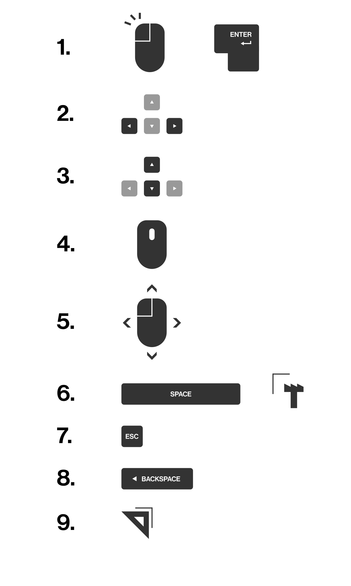

Interactions
1. Enter gomb, klikk a képen: képszekvencia léptetése
2. Jobb és bal nyil gomb, nyil navigáció: mûvek közti váltás
3. Fel és le nyil gomb képszekvencia elôre-hátra léptetése
4. Egér scroll: Zoomolás
5. Klikk és egér mozgatás: Nagyított kép mozgatása
6. Space gomb, kattintás a logón: Felhasználói felület elrejtése
7. Esc gomb: Teljes képernyô elhagyása
8. Backspace gomb: Vissza a galériához
9. Jobboldali sarok menü: Beállítások
